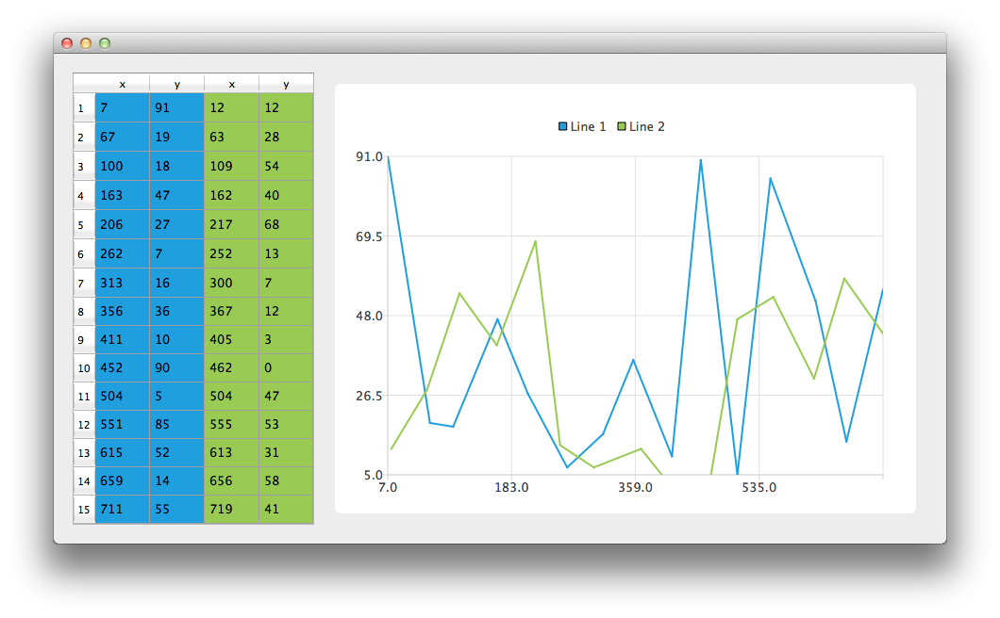

Using Model Data
Note: This is part of the Charts with Widgets Gallery example.

Let's start by creating an instance of the CustomTableModel class. The CustomTableModel class is derived from QAbstractTableModel and it was created for the purpose of this example. The constructor of this class populates the internal data store of the model with the data that is suitable for our chart example.
auto *model = new ModelDataModel;
We now have a model with data that we would like to display both on the chart and in a QTableView. First, we create QTableView and tell it to use the model as a data source. To make the data cells fill the table view we also change headers resize mode.
// create table view and add model to it auto tableView = new QTableView; tableView->setModel(model); tableView->horizontalHeader()->setSectionResizeMode(QHeaderView::Stretch); tableView->verticalHeader()->setSectionResizeMode(QHeaderView::Stretch);
Now we need the QChart instance to display the same data on the chart. We also enable animations. It makes it easier to see how modifying the model's data affect the chart.
auto chart = new QChart; chart->setAnimationOptions(QChart::AllAnimations);
The code below creates new line series and gives it a name. The following line creates an instance of QVXYModelMapper class. The next two lines specify that X-coordinates are taken from the model's column(Qt::Vertical) with index 0. The Y-coordinates are taken from the model's column with index 1. To create a connection between the series and the model we set both of those objects to QVXYModelMapper.
Finally, the series is added to the chart.
auto series = new QLineSeries; series->setName("Line 1"); auto mapper = new QVXYModelMapper(this); mapper->setXColumn(0); mapper->setYColumn(1); mapper->setSeries(series); mapper->setModel(model); chart->addSeries(series);
To show in QTableView which data corresponds with which series this example uses table coloring. When a series is added to the chart it is assigned a color based on the currently selected theme. The code below extracts that color from the series and uses it to create a colored QTableView. The coloring of the view is not a part of the QChart functionality.
// for storing color hex from the series QString seriesColorHex = "#000000"; // get the color of the series and use it for showing the mapped area seriesColorHex = "#" + QString::number(series->pen().color().rgb(), 16).right(6).toUpper(); model->addMapping(seriesColorHex, QRect(0, 0, 2, model->rowCount()));
The same operations are done with a second series. Notice that for this series different columns of the same model are mapped.
series = new QLineSeries; series->setName("Line 2"); mapper = new QVXYModelMapper(this); mapper->setXColumn(2); mapper->setYColumn(3); mapper->setSeries(series); mapper->setModel(model); chart->addSeries(series); // get the color of the series and use it for showing the mapped area seriesColorHex = "#" + QString::number(series->pen().color().rgb(), 16).right(6).toUpper(); model->addMapping(seriesColorHex, QRect(2, 0, 2, model->rowCount()));
To avoid setting up the QGraphicsScene we use the QChartView class that does it for us. QChart object pointer is used as a parameter of the QChartView constructor. To make the chart look nicer, Antialiasing is turned on and the minimum size of the chartView widget is set.
chart->createDefaultAxes(); chart->layout()->setContentsMargins(0, 0, 0, 0); auto chartView = new QChartView(chart, this); chartView->setRenderHint(QPainter::Antialiasing);
Finally we place both widgets in a layout and use the layout as the application layout.
// create main layout auto mainLayout = new QGridLayout; mainLayout->addWidget(tableView, 1, 0); mainLayout->addWidget(chartView, 1, 1); mainLayout->setColumnStretch(1, 1); mainLayout->setColumnStretch(0, 0); setLayout(mainLayout);
The application is ready. Try modifying the data in the table view and see how it affects the chart.